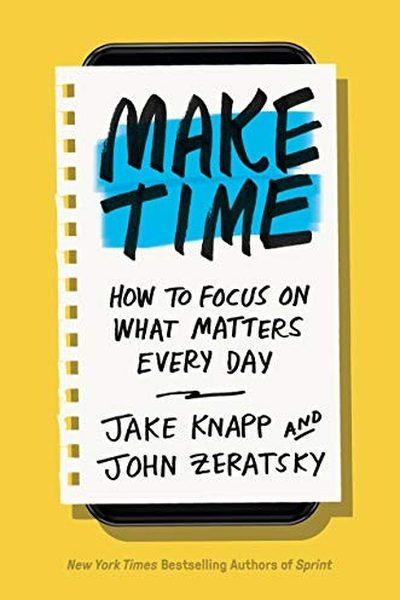

Library › Productivity
Make Time — Summary & Key Lessons

How to focus on what matters every day — from the designers who built Gmail's inbox and YouTube's binge engine.
📖 OPEN THE FULL INTERACTIVE BREAKDOWN →🌐 Read it in Hindi, Hinglish, Gujarati, Tamil & 22 more languages — free, with audio.
💡 The Big Idea
Jake Knapp and John Zeratsky — the Google designers behind time-management systems used by millions — wrote Make Time after realizing their own 'productivity' tools made them busier, not happier. Their system is radically simple: every day, pick ONE Highlight (the thing that matters most), make time for it with a laser (remove distractions), and energize yourself with real breaks (move, eat, sleep, unplug). The infinity pool — the endless feed of distractions — is the enemy; you can't quit it, but you can design around it.
🧠 The 5 Key Lessons
Lesson 1: The Highlight: One Intention Per Day
Highlight
Every day, choose your Highlight: the one thing that, if it happens, makes the day a success. It can be urgent (a deadline), satisfying (a passion), or joyful (a person) — but it must be ONE, chosen deliberately in the morning, not discovered at midnight. The Highlight turns a reactive day into a designed day.
📖 Example: Knapp and Zeratsky's rule from their own lives: writing days began by picking the single chapter section that mattered most — everything else (email, meetings) was scheduled AROUND it, not before it. Days without a Highlight drifted into the infinity pool. Read the full example →
⚡ Do this: Tomorrow morning, write your Highlight in one sentence. Ask: 'Is this urgent, satisfying, or joyful?' Put it in your calendar for a fixed time.
Lesson 2: The Laser: Design Out Distraction
Laser
Once you have a Highlight, you need a laser: specific tactics to keep your attention on it. The authors' arsenal: phone in another room, browser with one tab, the 'busy' calendar block, headphones as a signal, and 'the phone stack' for meetings. The laser isn't willpower — it's design: you arrange the environment so focus is the default.
📖 Example: Their favorite: make your phone boring — delete social apps (or move them off the home screen), turn off every notification except humans. Knapp describes his phone as 'a brick that makes calls,' and his focus doubled. Read the full example →
⚡ Do this: Pick one laser tactic today: phone in another room during your Highlight, or notifications off for 2 hours. Do it for 5 days straight.
Lesson 3: Energize: The Body Runs the Mind
Energize
Focus is physical: a tired, hungry, motionless body can't sustain attention. The authors' energy rules: move every 90 minutes (exercise is the 'highlight multiplier'), eat real food (not sugar spikes), sleep 8 hours (the ultimate performance tool), and take genuine breaks — walking, not scrolling, because screens keep your attention working.
📖 Example: Knapp and Zeratsky both noticed their best ideas and focus came after exercise — so they scheduled workouts before hard work, not after. The authors also treat sleep like a competitive advantage, citing their own and others' data that tired days are lost days. Read the full example →
⚡ Do this: Add one energizer this week: a 10-minute walk before your Highlight, or a fixed bedtime 30 minutes earlier. Track your focus difference.
Lesson 4: The Infinity Pool: Know Your Enemy
The Infinity Pool
The infinity pool is the endless feed — social media, news, video, the bottomless scroll — engineered by the smartest minds in the world to keep you swimming. The authors' warning: you can't win by willpower alone against products built by thousands of engineers. You win by design: making the pool hard to enter (log out, delete, move) and boring once you're in.
📖 Example: Both authors worked at Google on products that grew the pool (Gmail, YouTube) — which is exactly why they built Make Time: they knew the machinery from the inside, and knew the only defense is environmental. Read the full example →
⚡ Do this: Make one pool entry harder today: log out, delete the app, or put the phone across the room at night. Make one pool session shorter: set a 10-minute timer.
Lesson 5: Design Days, Not Decades
Daily Systems
The book's final philosophy: don't chase a perfect system — run daily experiments. Each day, pick a Highlight, a laser tactic, and an energizer; at night, reflect on what worked ('highlight: yes, laser: failed, tomorrow: try the other room'). Small daily design beats grand yearly resolutions every time.
📖 Example: The authors literally rate their days and adjust one variable per day — a personal A/B testing loop. Their finding: people don't fail from lack of ambition; they fail from lack of daily design. Read the full example →
⚡ Do this: Tonight, write tomorrow's Highlight + one laser tactic + one energizer. Tomorrow night, rate each (1–5) and change exactly ONE thing.
✅ 5-Step Action Plan
- Pick a daily Highlight every morning — one sentence, scheduled.
- Deploy one laser tactic daily for 5 days.
- Add one energizer (walk, food, sleep) before your Highlight.
- Make one infinity-pool entry harder today.
- Run the daily A/B loop: rate Highlight, laser, energizer — change one thing.
💬 Best Quotes from Make Time
- “Busy-ness is not a virtue; it's a trap.”
- “The Highlight is the one thing you want to make sure happens today.”
- “The infinity pool is the default state of modern life — the battle is to swim against it.”
Interactive version: mark lessons as read, listen in your language, share quote cards.